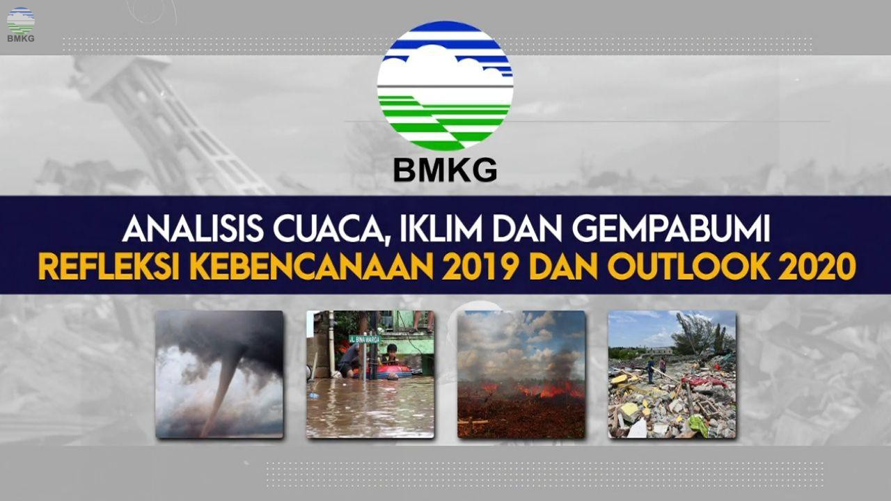

Kantor Pusat
Jl. Angkasa I No.2 Kemayoran
Jakarta Pusat, DKI Jakarta 10610
PO Box 3540 Jkt.
Tel. & Fax
Call Center (021) 196
Fax (021) 4246703
Email:
info@bmkg.go.id
|
- Informasi Cuaca
- Cuaca Maritim
- Cuaca Penerbangan
- CEWS (Climate Early Warning System)
- InaTEWS (Indonesia Tsunami Early Warning System)
- Data Online BMKG
- Email BMKG
- JDIH BMKG
- Inspektorat BMKG
- SDM BMKG
- Pusdiklat BMKG
- Puslitbang BMKG
- STMKG
|
Info BMKG - Cuaca, Iklim, dan Gempabumi Indonesia
Semua informasi mengenai Prakiraan Cuaca, Iklim, Kualitas Udara, dan Gempabumi yang terjadi di berbagai wilayah di Indonesia tercakup dalam satu aplikasi mobile.

|

Kaleidoskop BMKG 2019 dan Outlook BMKG 2020 .
|